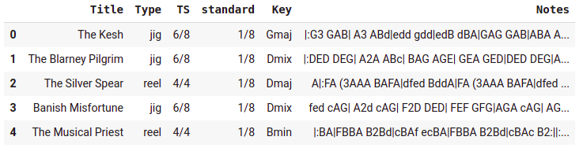

WhistleGen: Generating Traditional Irish music with ML
https://www.youtube.com/watch?v=B7SEP2p4Y1A
Video overview of this project - do check out my channel if you like this!
Earlier this year I did an experiment where I tried to write some code on a small, atomic project every day. The results are documented at https://johnowhitaker.github.io/days_of_code/. In this post I want to share one of my favorite little diversions - my attempt at teaching a computer to compose some whistle music!
Getting the Data
To train a model we will need some data. Previous attempts at music generation have worked on midi, or raw audio. However, a lot of Irish music is shared in a simplified form called ‘ABC Notation’ using letters and a limited set of symbols to encode the essential melody and leaving embellishments, harmonies and accents largely up to the interpretation of the player. thesession.org is one large central repository of these tunes, but I couldn’t find an easy way to download them in bulk. Web Scraping to the rescue!

A neat(ish) dataset of tunes in ABC notation
You can see the code and details here. Web scraping is one of those cases where there are many valid approaches one could take, but all of them in essence boil down to identifying ways of identifying the specific parts of the html code that surround the data you are interested in. For example, on a page of results from thesession each song is listed as a list item taking the form <li class="manifest-item">. With a bit of patience we can get URLs for each tune and then scrape the relevant info from those URLs with some more effort. At the end of this process, a nice neat dataframe with the titles, metadata and note sequences.
Modelling
We’re going to train a ‘language mode’ - a concept from the field of NLP, where a model (usually an LSTM or transformer - based architecture) tries to predict the next token in a sequence, allowing it to learn from unstructured data such as large chunks of text or, in this case, music. The end result of this is a generative model that can ‘autocomplete’ sequences. These language models can then be re-purposed for classification, translation etc. but in this case we want a generative model so that is unnecessary.
The text needs to be tokenized. We can simply split into individual characters, but since the notation includes ‘note modifiers’ such as ‘=’ which are sometimes placed before a note to sharpen or flatten it and some other 2-character symbols (like ‘|:’ for the start of a bar with a repeat), I chose to build a custom tokenizer. The notebook shows how to construct fastai dataloaders that package everything up neatly ready for training.
Once the dataloaders are ready, we can simply train this like any other language model. I used the learning rate finder (output shown above) to pick an initial learning rate and then, following the example in the fastai docs, gradually unfroze the model and continued to train it. After a few minutes the model is predicting the next token with ~38% accuracy!
Getting Some Output
Some early WhistleGen output
We can feed our model a few tokens and ask it to continue making guesses for the next token in the sequence: learn.predict('|:G', 100, temperature=0.7). The temperature parameter controls how ‘conservative’ the model is; higher values result in output with more randomness. To convert the string of letters that the model spews out into playable music, I used this handy online editor to preview, edit and download the songs.
The model is OK at guessing sensible notes, but it doesn’t produce much in the way of song structure. I found it best to use the output as a starting point, tweaking the odd bit of timing and adding repeats, separate parts and the odd extra flourish to create a song that is effectively co-written by myself and my AI assistant. It’s surprisingly fun! I hope this inspires you to try something like this yourself - do let me know what you create.